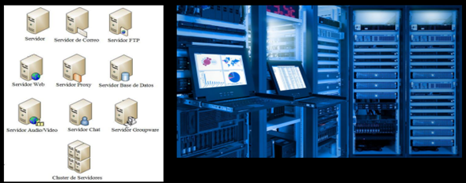
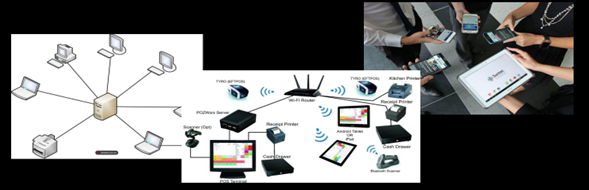

La comunicación de datos es el movimiento de información de computadoras de un punto a otro por medio de sistemas de transmisión eléctricos u ópticos. Tales sistemas también se denominan redes de comunicación de datos. Incluye transmisión de voz y video (imágenes y gráficos) así como datos, y generalmente implica mayores distancias.
Existen tres componentes básicos de hardware en una red de comunicación de datos:
En el campo de la informática y las telecomunicaciones, por servidor se entiende "un equipo informático que forma parte de una red y provee servicios a otros equipos". Existen muchísimos tipos de servidor según su función y su contenido, cada día más, como ocurre con todos los elementos que siguen teniendo un papel determinante en el panorama tecnológico y de Internet. Estos son algunos de los tipos más comunes de servidores que podemos encontrar en el mercado: Servidor de impresiones, Servidor de correo, Servidor de Fax, Servidor de Telefonía, Servidor Proxy, Servidor Remoto, Servidor Web, Servidor de Base de Datos, Servidor de Seguridad....
Un cliente de red o cliente software, en una red de computadoras, es la entidad de software que realiza las peticiones de servicio a los proveedores del mismo. De esta manera, un cliente de red lanzará peticiones en forma de mensajes a un servidor de red que las procesará. Después de este proceso, el servidor transmitirá la respuesta al cliente.
Se refiere al cableado, a las ondas electromagnéticas, o al medio físico que permita la transmisión de la información de la red, sea cual sea.